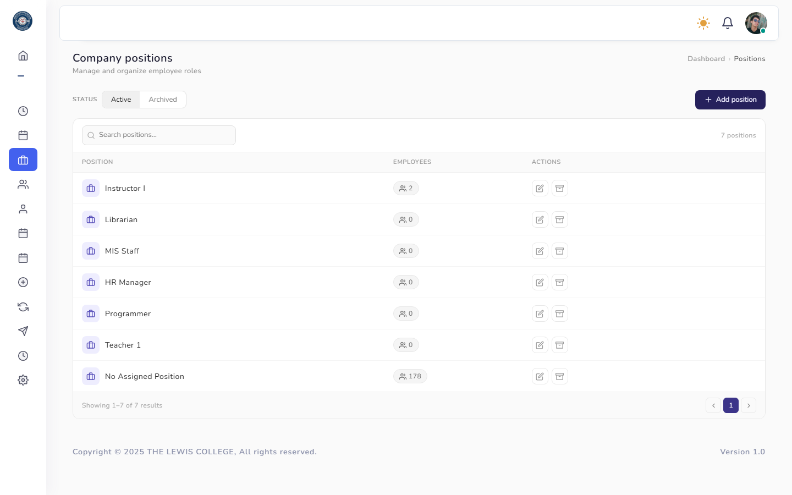
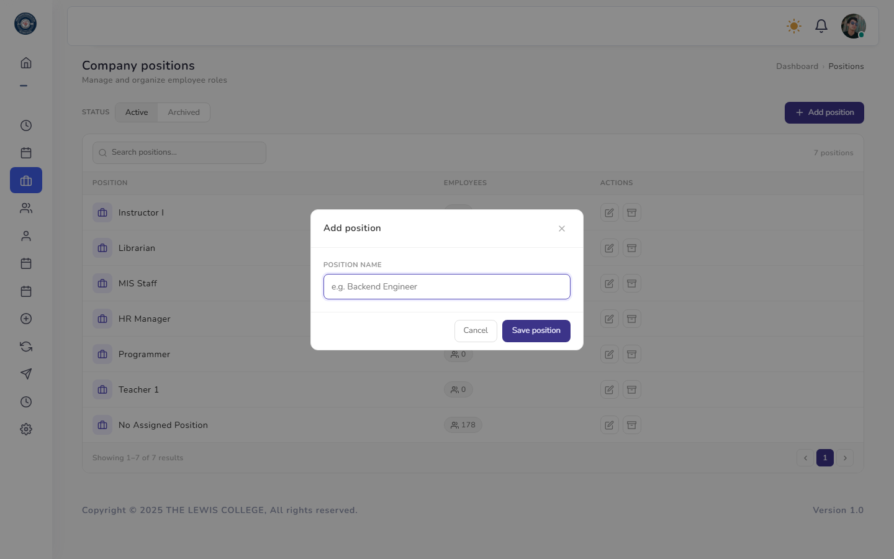

Company Positions
The list of job titles/positions assignable to employees, with Active and Archived tabs so unused positions can be retired without losing history.

Display Position List
Active/Archived tabs; archiving a position does not affect employees currently holding it.

Add Add Position
Create a new position/job title available for assignment to employees.
Rules & Validation
- Position name — required.
- Archiving prompts a confirmation and explicitly does not affect employees currently in that position; restoring returns it to the Active tab.
Frequently Asked Questions
Common questions about Company Positions.
What happens to employees when I archive their position?⌄
Nothing changes for them — archiving only removes the position from the picker for new assignments. Employees already in that position keep it.
Can I permanently delete a position?⌄
No — positions can only be archived or restored, never hard-deleted, to preserve historical assignment records.